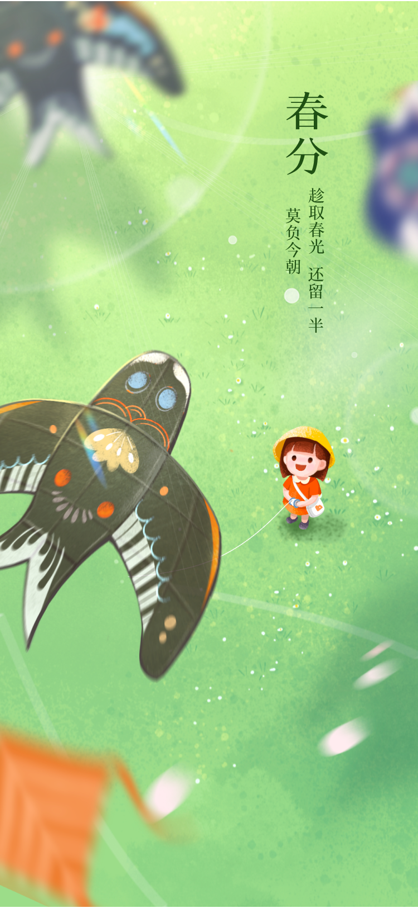

朝昔 节气视觉
朝昔是一个以中国传统二十四节气为主题的视觉设计项目。通过现代设计语言诠释传统节气文化，展现节气之美，传递节气文化。每个节气都有其独特的自然特征和文化内涵，项目通过精心设计的视觉元素，将这些特征和内涵以现代审美呈现。



朝昔是一个以中国传统二十四节气为主题的视觉设计项目。通过现代设计语言诠释传统节气文化，展现节气之美，传递节气文化。每个节气都有其独特的自然特征和文化内涵，项目通过精心设计的视觉元素，将这些特征和内涵以现代审美呈现。